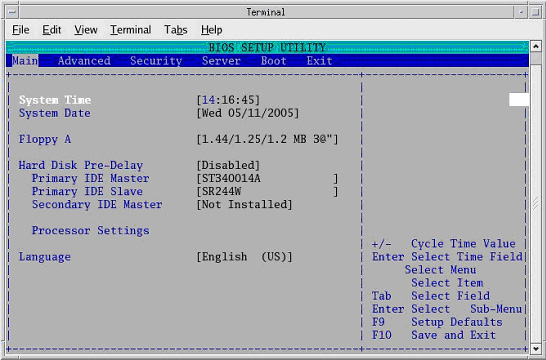

Operating Documentation
Direction 5193575-800, Rev# 5
LightSpeed 7.X Service Information - Adv
Operating Documentation |
| Last Revised: | 9 April, 2007 |
This module describes the steps necessary to change the VDARC Node BIOS to enable the OS load onto VDARC Node from the Host Computer. The VDARC Node Boot Order BIOS is modified before the VDARC Node OS load.
| NOTE: | Be patient. Telnet response may be slow. |
Open a Unix Shell and type the following:
{ctuser@hostname} su -
Password: #bigguy
[root@hostname] service cliservice start
[root@hostname] telnet localhost 623
At Server Prompt type: darc
username <Enter>
password <Enter>
Login successful
dpccli> reset
ok
dpccli> console
| NOTE: | A slight delay here is normal. Be patient. |
Interrupt the VDARC boot process to enter the BIOS Setup mode. When the message “Press <F2> to enter setup” appears, press [F2].
| NOTE: | <F2> may have to be pressed many times before BIOS setting screen can be seen. There will be a short delay before the VDARC BIOS setup screen is displayed. |
Illustration 1: VDARC BIOS Setup Screen

Select Boot Menu, using arrow keys.
Highlight Boot Device Priority Menu, then press <Enter>.
Illustration 2: Boot Device Priority Menu

Highlight 1st Boot Device, then press <Enter>.
A small window will appear with the options available.
(For Westville VDARC) Using the down-arrow key, scroll down to highlight IBA 1.1.08 Slot 0338, then press <Enter>.
(For Jarrell VDARC) Using the down-arrow key, scroll down to highlight PS -slimtype COMBO, then press <Enter>.
Illustration 3: Boot Device Options - Westville shown, Jarrell similar

Using the down-arrow key, scroll down to highlight the 2nd Boot Device entry. Press <Enter>.
A small window will appear with the options available.
(For Westville VDARC) Using the down-arrow key, scroll down to highlight the ATAPI CD-ROM entry. Press <Enter>.
(For Jarrell VDARC) Using the down-arrow key, scroll down to highlight the IBA GE Slot 0320v entry. Press <Enter>.
Illustration 4: Boot Device Options - Westville shown, Jarrell similar

Using the down-arrow key, scroll down to highlight the 3rd Boot Device entry. Press <Enter>.
A small window will appear with the options available.
(For Westville VDARC) Using the down-arrow key, scroll down to highlight the Hard Drive entry. Press <Enter>.
(For Jarrell VDARC) Using the down-arrow key, scroll down to highlight the PM-ST94813A entry. Press <Enter>.
(For Westville VDARC) Verify the final Boot Device Priority is set to:
IBA 1.1.08 Slot 0338
ATAPI CD-ROM
Hard Drive
IBA 1.1.08 Slot 0339
Removable Devices
| NOTE: | The removable devices might not be present. This is OK. |
(For Jarrell VDARC) Verfiy the final Boot Device Priority is set to:
PS -slimtype COMBO
IBA GE Slot 0320v
PM-ST94813A
IBA GE Slot 0321v
EFI Boot Manager
Press <Esc> to exit back to Boot menu.
Save VDARC BIOS settings:
From Boot menu, arrow to (move to) Exit menu.
Highlight Exit Saving Changes, and press <Enter>
Illustration 5: Exit Saving Changes

Highlight [Yes], and press <Enter>, to “Save configuration changes and exit now.”
Wait one minute.
Illustration 6: Save and Exit

| NOTE: |
(For Westville)
After saving the VDARC
BIOS, the BIOS SETUP UTILITY window should disappear
(within one minute) and the VDARC will begin to reboot. If the BIOS SETUP UTILITY window does not disappear within a
minute, close the shell and continue with the load process on the
VDARC. If necessary, reset the VDARC (if it is hung). If the VDARC
OS load continues to fail and a pop-up screen states that the user
should check VDARC Boot BIOS Order, perform the steps within this
procedure again. (For Jarrell) After saving the VDARC BIOS, the BIOS SETUP UTILITY window might not disappear, although the VDARC will begin to reboot. Close the BIOS SETUP UTILITY window. Wait 2 minutes, then open a new Unix shell and ping the VDARC (ping darc) to verify it is ready for the software load (use CTRL-C to stop ping). If necessary, reset the VDARC (if it is hung). If the VDARC OS load continues to fail and a pop-up screen states that the user should check VDARC Boot BIOS Order, perform the steps within this procedure again. |
When the darc login: prompt appears, close the Terminal Window.